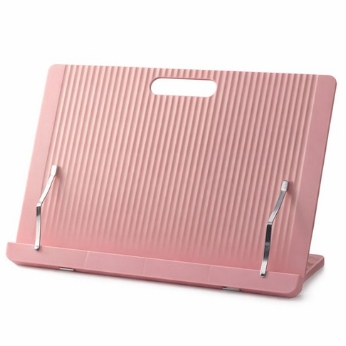
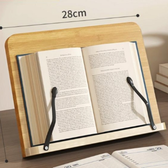
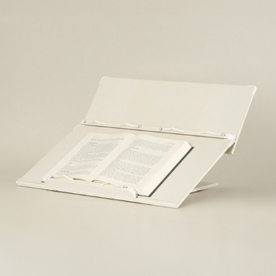
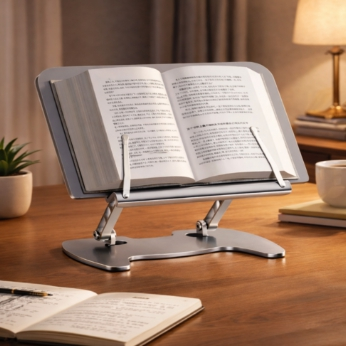

독서실에서 하루 종일 공부하는 사람들을 관찰해 보면, 한두 시간이 지나면서 서서히 고개가 앞으로 나가기 시작합니다. 어깨는 움츠러들고, 등은 둥글게 말리고, 눈과 책의 거리는 점점 가까워집니다. 이런 자세가 오래 반복되면 목과 어깨의 피로가 쌓이고, 집중력도 쉽게 떨어질 수 있습니다.
독서대는 이 문제를 비교적 간단하게 완화하는 도구입니다. 책을 조금 더 높은 위치에 두는 것만으로도 고개를 과하게 숙이지 않게 되고, 장시간 공부할 때 자세를 보다 안정적으로 유지하는 데 도움이 됩니다.
책상 위의 작은 변화, 목과 어깨의 큰 차이
핵심은 책을 너무 낮게 두지 않는 것입니다. 책이나 노트가 책상에 평평하게 놓이면 자연스럽게 고개가 더 숙여지고, 그 자세가 길어질수록 피로도 커집니다. 독서대는 책의 각도와 높이를 조절해 이런 부담을 줄이는 데 도움을 줄 수 있습니다.
핵심은 "눈높이와 각도"입니다. 책이나 모니터가 지나치게 낮으면 자연스럽게 고개가 숙여집니다. 독서대는 책을 조금 더 편한 시선 높이로 올려주는 도구입니다.
독서대 유형 — 어떤 걸 사야 할까?
독서대는 크게 네 가지 유형으로 나눌 수 있습니다. 소재, 크기, 기능에 따라 용도가 확연히 다르므로, 자신의 학습 환경에 맞는 유형을 선택하는 게 중요합니다.
| 유형 | 특징 | 추천 대상 |
|---|---|---|
| 플라스틱 1단 | 가볍고 저렴, 각도 조절 | 입문자, 휴대용 |
| 원목/MDF 1단 ★ | 안정감, 내구성 우수 | 고시생, 장시간 학습 |
| 2단 독서대 | 필기판 + 책 거치 분리 | 필기 많은 수험생 |
| 높이 조절형 | 눈높이 맞춤, 각도+높이 | 자세 조절 중시 |
① 플라스틱 1단 독서대 — "일단 써보기"
가장 부담 없이 시작할 수 있는 유형입니다. 접이식이라 휴대하기에도 좋습니다. 다만 가벼운 만큼 안정감이 떨어지고, 두꺼운 교재를 올리면 뒤로 넘어갈 수 있다는 단점이 있습니다.

② 원목/MDF 1단 독서대 — "고시생의 기본기"
고시 독서실에서 가장 흔하게 볼 수 있는 유형입니다. 나무 소재라 무게감이 있어 안정적이고, 두꺼운 법전이나 기본서를 올려도 비교적 안정적으로 사용할 수 있습니다. 장시간 같은 자리에서 공부하는 사람에게 특히 잘 맞습니다.

③ 2단 독서대 — "필기와 독서를 동시에"
위쪽 단에 교재를 세워놓고, 아래쪽 필기판에서 노트 정리를 할 수 있는 구조입니다. 서술형 시험 준비처럼 교재를 보면서 동시에 필기할 일이 많은 분께 적합합니다. 다만 공간을 많이 차지하므로 고정 사용을 추천합니다.

④ 높이 조절형 독서대 — "시선 높이까지 세밀하게"
각도뿐 아니라 높이까지 조절할 수 있는 프리미엄 유형입니다. 책상 높이나 의자 높이에 따라 시선 위치를 세밀하게 맞추고 싶은 분에게 적합합니다.

고르기 전에 확인할 것들
크기를 확인하세요. 독서대 폭이 최소 30cm 이상은 되어야 고시 기본서나 법전을 안정적으로 올려놓을 수 있습니다.
소재의 질감도 중요합니다. 플라스틱은 가볍지만 흔들릴 수 있고, 원목/MDF는 안정적이지만 무겁습니다. ABS 플라스틱 마감 제품은 손에 닿는 느낌이 편한 편입니다.
각도 조절 단수를 체크하세요. 보통 4~6단 정도면 대부분의 학습 환경에서 무난하게 사용할 수 있습니다.
💡 투명 독서대도 고려해보세요
최근 투명 아크릴 독서대도 많이 보입니다. 시야가 덜 답답하고 책상이 깔끔해 보이는 장점이 있지만, 스크래치와 흔들림 측면에서는 제품별 차이가 꽤 큰 편입니다.
독서대 사용, 솔직한 장단점
👍 장점
- 장시간 공부할 때 자세 유지에 도움
- 양손이 비교적 자유로워 필기 편리
- 두꺼운 교재 펼침 유지 가능
- 노트북·태블릿 거치에도 활용 가능
- 공부 공간의 정돈감이 좋아짐
👎 아쉬운 점
- 책상 공간을 추가로 차지
- 원목 소재는 무거워 휴대 불편
- 저가형은 흔들림·넘어짐 문제 가능
- 처음엔 적응 기간이 필요할 수 있음
잘 쓰기 위한 팁
각도는 30~45도 전후가 무난합니다. 너무 세우면 책이 미끄러지고, 너무 눕히면 다시 고개를 숙이게 됩니다.
독서대 아래 공간을 활용하세요. 필기구, 포스트잇, 인덱스탭 등을 가까이 두면 동선이 효율적입니다.
2단 독서대 + 보조 독서대 조합: 메인 교재를 2단 독서대 위쪽에, 참고 자료를 작은 보조 독서대에 올려놓으면 시선 이동이 줄어들어 공부 흐름을 유지하기 좋습니다.
1~2주의 적응 기간을 두세요. 처음에는 어색할 수 있지만, 며칠 지나면 독서대가 없는 상태가 오히려 불편하게 느껴지는 경우도 많습니다.